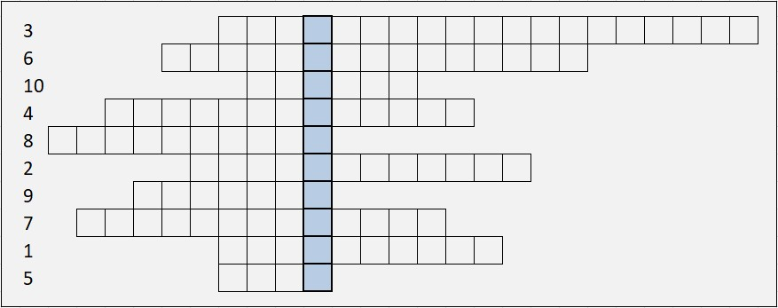

Задание №1.
Вам необходимо решить кроссворд с теоретическими вопросами. Выделенный столбец - это ключ шифра. Вам поможет доктор Ватсон.
Вы можете воспользоваться следующими ссылками:

- Если на некотором промежутке будет выполняться равенство F’(x) = 0, то какая это функция F?
- Формула Ньютона-Лейбница позволяет вычислить … интеграл от непрерывной функции f(x) на отрезке [a; b].
- Что нужно сделать с неопределенным интегралом, чтобы результат равнялся подынтегральному выражению?
Подсказка:
- С геометрической точки зрения определенный интеграл от неотрицательной функции численно равен площади соответствующей … трапеции.
- Если у определенного интеграла нижний предел равен верхнему, то интеграл равен …
- Если поменять местами пределы интегрирования, определенный интеграл меняет знак на …
- Пусть F(x) – какая-нибудь первообразная для функции f(x) на некотором промежутке. Тогда функция F(x)+C, где C – произвольная константа, будет … функцией для f(x) на данном промежутке.
- Достаточное условие интегрируемости: если функция … на некотором отрезке, то она интегрируема на этом отрезке.
- Фамилия человека, который впервые в печати ввёл символ для интеграла (и указал, что эта операция обратна дифференцированию)
- Определённым интегралом Римана функции f(x) называется … её интегральных сумм.
Задание №2.
Вы помогаете Майкрофту Холмсу с построением графиков функций.
Задание №3.
Догнала ли собака Генри?
Собака находилась за 50 метров от Ватсона и Генри, когда они побежали (t = 0).
Скорость собаки меняется по закону:
Скорость Генри меняется по закону:
Генри бежал T = 16 секунд, после чего собака упала. Узнайте приблизительно, насколько близко
подобралась собака к Генри.
Вознаграждение: два символа из зашифрованной фразы.
Ваш ответ:
Пробел, С)
3.3 м;
Тире, О)
0.3 м;
Пробел, Ш)
13 м
Первый символ стоит в фразе на местах:
41.
Вторая буква стоит в фразе на местах:
4, 14, 24.